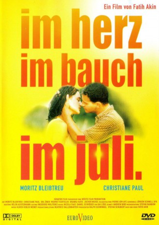

#4630 Im Juli
Alternativ: In July (Originaltitel)
 
 IMDB-Wertung: 7.8 / 10
IMDB-Wertung: 7.8 / 10  Metascore: 0
Metascore: 0 
Wie weit geht ein Verliebter, um seine Angehimmelte in die Arme zu schließen? Bis nach Istanbul. Und das, obwohl der schnöde Referendar Daniel alles andere als ein Abenteurer ist. Doch um Melek wiederzutreffen, setzt er sich ins Auto. Mit im Gepäck hat er Tramperin Juli. Sie liebt Daniel, doch der kann nur an Melek denken. Ihre gemeinsame Reise durch Südosteuropa wird eine Tortur - mit Raub, Prügel und türkischem Knast.
Jahr: 2000
Dauer: 95 Minuten
FSK: 12
Land: Deutschland Studio: Senator FilmTonspuren:
Untertitel:
Auflösung: SD (640x368) Größe: 699 MB
Genre: Abenteuer, Komödie, Liebe
Regisseur: Fatih Akin
Drehbuch: Spencer Susser
Soundtrack:
Darsteller:
 Moritz Bleibtreu als Daniel Bannier
Moritz Bleibtreu als Daniel Bannier Christiane Paul als Juli
Christiane Paul als Juli Mehmet Kurtulus als Isa
Mehmet Kurtulus als Isa Jochen Nickel als Leo
Jochen Nickel als Leo Branka Katic als Luna
Branka Katic als Luna Birol Ünel als Kellner
Birol Ünel als Kellner Sandra Borgmann als Marion
Sandra Borgmann als Marion- Fatih Akin als Rumänischer Grenzbeamter
- Idil Üner als Melek
- Ernest Hausmann als Kodjo
- Gábor Salinger als Marktverkäufer
- Cem Akin als Türkischer Grenzbeamter
- Nina Lauterbach als Kira
- Linda Wagener als Anette
- Hans Daglioglu als Ernie
- Niños con Bombas als Band
- Julia Bähre als Partymieze
- Dr. Stein als Strand-Typ
- Eleftherios Kokotos als Gitarrenspieler
- Monika Dahlberg als Frau an der Rezeption
- Gerhard Polacek als Wirt 'Donauweibchen'
- Torsten Hammann als Trucker
- Marc Schönthaler als Trucker
- Mirko Hussari als Trucker
- Ákos Sinkó als Matrosen
- György Liszác als Matrosen
- Zsolt Somogyi als Matrosen
- Ferenc Diera als Matrosen
 Adam Bousdoukos als Sänger im Club
Adam Bousdoukos als Sänger im Club- György Barkó als Ungarischer Bauer
- Ernö Virág als Zigeunerjunge
- Sándor Badár als Alin
- Tibor Kenderesi als Opa
- Ali Salim Yasar als Kommissar
Datei: X:\2000\Im Juli (2000, FSK12, 640x368).avi seit 25.10.2016
Festplatte: HD 1996-2002
 Es gibt insgesamt 82 Filme in der Gruppe '2000'
Es gibt insgesamt 82 Filme in der Gruppe '2000'